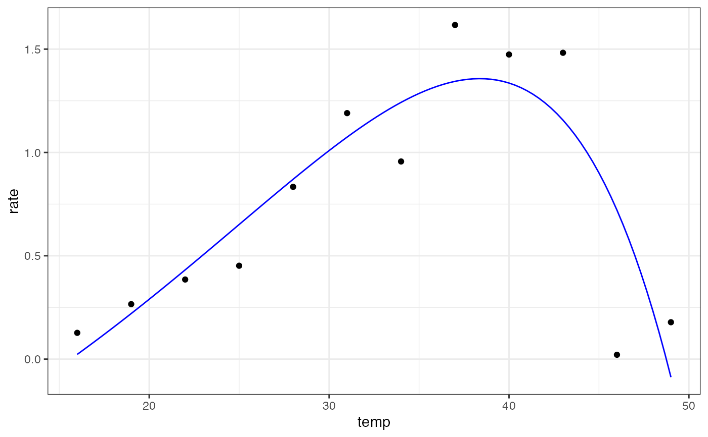

Jöhnk model for fitting thermal performance curves
joehnk_2008(temp, rmax, topt, a, b, c)
| temp | temperature in degrees centigrade |
|---|---|
| rmax | the rate at optimum temperature |
| topt | optimum temperatute (ºC) |
| a | parameter with no biological meaning |
| b | parameter with no biological meaning |
| c | parameter with no biological meaning |
Equation: $$rate=r_{max} \bigg(1 + a \bigg(\bigg(b^{temp-t_{opt}} -1\bigg) - \frac{ln(b)}{ln(c)}(c^{temp-t_{opt}} -1)\bigg)\bigg)$$
Start values in get_start_vals are derived from the data or sensible values from the literature.
Limits in get_lower_lims and get_upper_lims are based on extreme values that are unlikely to occur in ecological settings.
Generally we found this model easy to fit.
Joehnk, Klaus D., et al. Summer heatwaves promote blooms of harmful cyanobacteria. Global change biology 14.3: 495-512 (2008)
# load in ggplot library(ggplot2) # subset for the first TPC curve data('chlorella_tpc') d <- subset(chlorella_tpc, curve_id == 1) # get start values and fit model start_vals <- get_start_vals(d$temp, d$rate, model_name = 'joehnk_2008') # fit model mod <- nls.multstart::nls_multstart(rate~joehnk_2008(temp = temp, rmax, topt, a, b, c), data = d, iter = c(3,3,3,3,3), start_lower = start_vals - 10, start_upper = start_vals + 10, lower = get_lower_lims(d$temp, d$rate, model_name = 'joehnk_2008'), upper = get_upper_lims(d$temp, d$rate, model_name = 'joehnk_2008'), supp_errors = 'Y', convergence_count = FALSE) # look at model fit summary(mod)#> #> Formula: rate ~ joehnk_2008(temp = temp, rmax, topt, a, b, c) #> #> Parameters: #> Estimate Std. Error t value Pr(>|t|) #> rmax 1.357e+00 2.018e-01 6.726 0.000271 *** #> topt 3.837e+01 2.500e+00 15.348 1.2e-06 *** #> a 9.213e+01 2.520e+06 0.000 0.999972 #> b 1.076e+00 2.404e+01 0.045 0.965549 #> c 1.078e+00 2.420e+01 0.045 0.965722 #> --- #> Signif. codes: 0 ‘***’ 0.001 ‘**’ 0.01 ‘*’ 0.05 ‘.’ 0.1 ‘ ’ 1 #> #> Residual standard error: 0.3609 on 7 degrees of freedom #> #> Number of iterations till stop: 95 #> Achieved convergence tolerance: 1.49e-08 #> Reason stopped: Number of calls to `fcn' has reached or exceeded `maxfev' == 600. #># get predictions preds <- data.frame(temp = seq(min(d$temp), max(d$temp), length.out = 100)) preds <- broom::augment(mod, newdata = preds) # plot ggplot(preds) + geom_point(aes(temp, rate), d) + geom_line(aes(temp, .fitted), col = 'blue') + theme_bw()